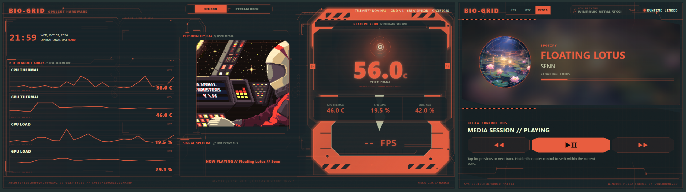

THE EVERYDAY COMMAND CENTERKeep the big picture.
Keep the big picture.
Control the details.
Let Command Array anchor the screen with system awareness, favorite actions and your own media. Add Audio Module beside it for the mix, microphone and music controls you reach for throughout the day.
Explore Command Array